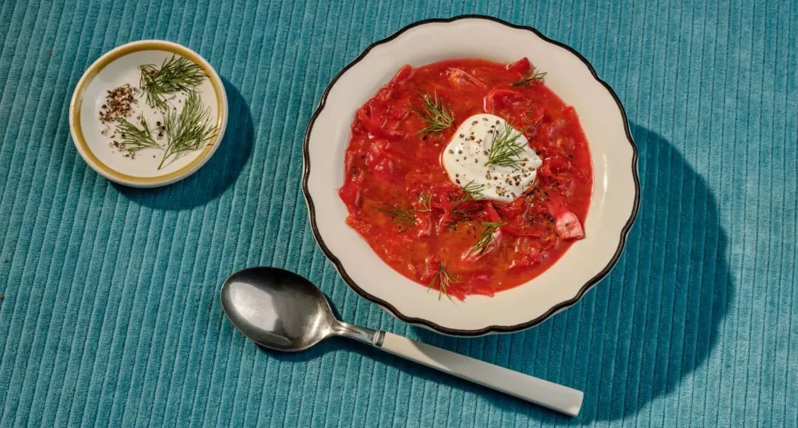

Borscht

Description
Borscht is traditional Russian soup made
of beetroot that's loaded with potatoes, carrots, tomato,
and a type of meat.
- About 2 pounds of skinless chicken thighs
- 8-10 cups water or vegetable stock
- 3-4 large beets, peeled and shredded
- 1 large carrot, peeled and shredded
- 2 cups shredded cabbage
- 1 large onion, thinly sliced
- 2 garlic cloves, minced
- 2-3 tbsp. oil
- 1-2 tbsp. apple vinegar or lemon juice (or combination of both) or to taste
- 3 tbsp. tomato paste
- 2-3 bay leaves
- ~ 1 tsp. salt or to taste
- pinch of sugar (optional)
- black pepper, to taste
Steps
- Place chicken thighs, water (or broth), and bay leaves in a
large pot. Bring to a boil over medium heat, cover, and simmer for about 20 minutes.Remove the chicken and set aside to cool.
- Add the cabbage into the broth and simmer for about 15 minutes.
- In a meantime, preheat the oil in a large pan. Cook the onions and garlic, 5 minutes, until aromatic and translucent.
- Add the carrots and beets and cook, stirring occasionally, for another 5-7 minutes.
- Transfer the sautéed veggies to a pot along with tomato paste, vinegar (or lemon juice), pepper, and salt. Cover and simmer on low heat for 20 minutes.
- Chunk the cooked chicken and discard the bones. Return the chicken thighs to the soup, and simmer uncovered for 10 minutes. Try and check for the seasonings.
If the soup is not sweet enough, add a pinch 0f sugar. If it's not sour enough, add a little of extra lemon juice or vinegar. If it's too thick to your liking, add some boiling water or broth.
- Off heat and let the Borscht stay for some time to allow all the flavours to mingle. Serve with yogurt or sour cream, dill, and bread. Keep leftovers refrigerated for 3-4 days. Enjoy!